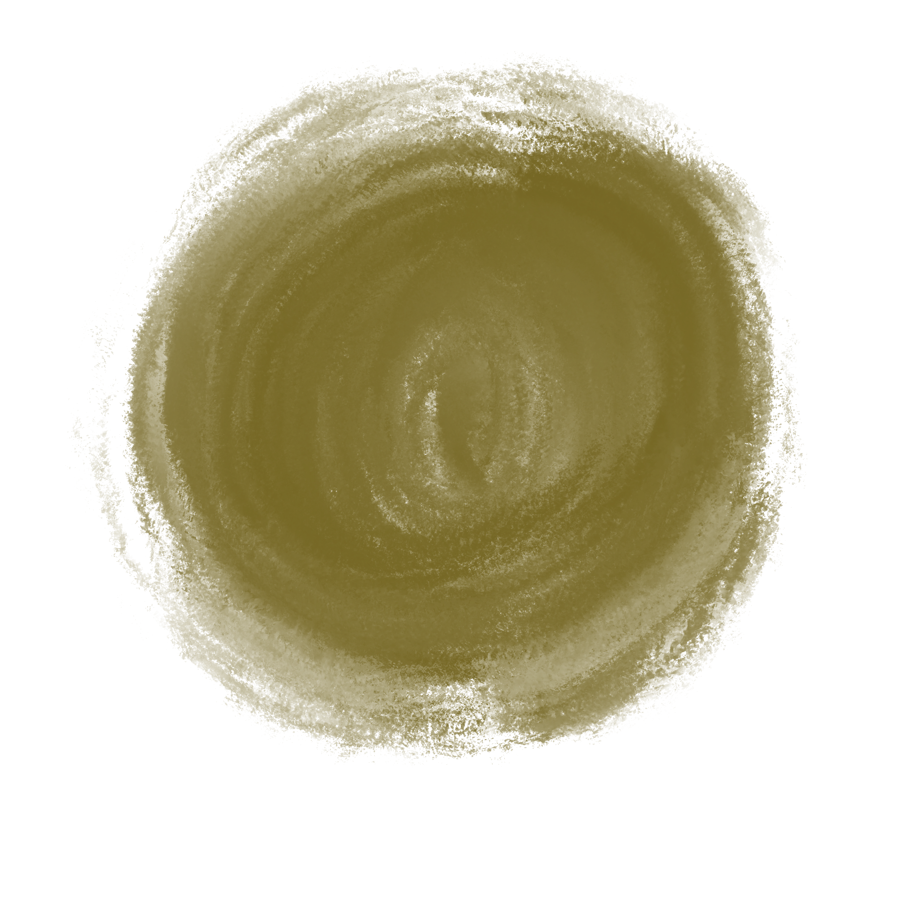
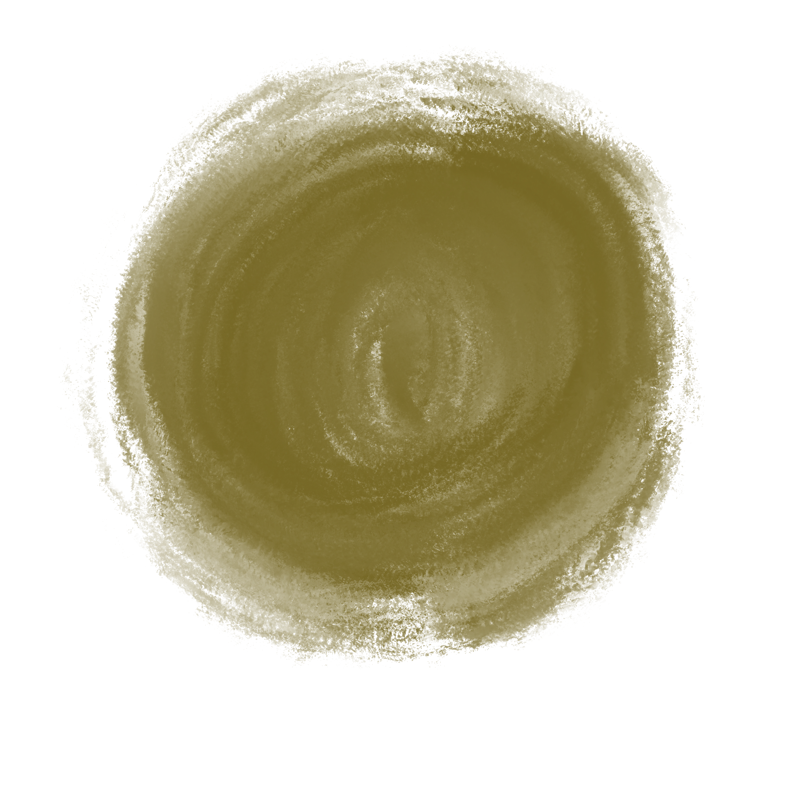
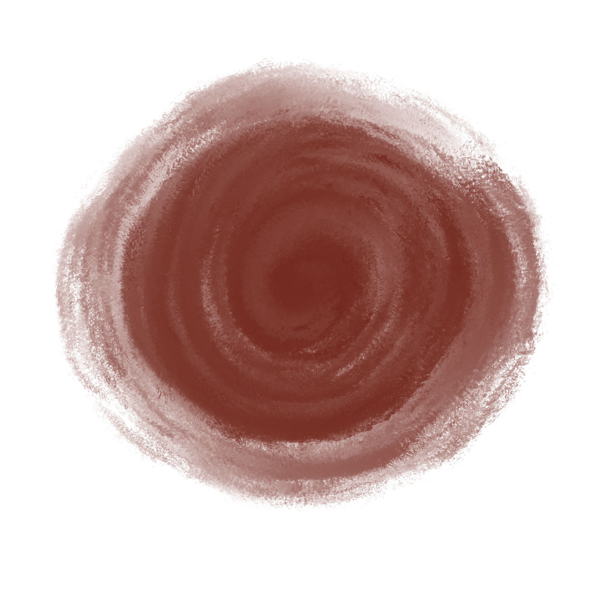
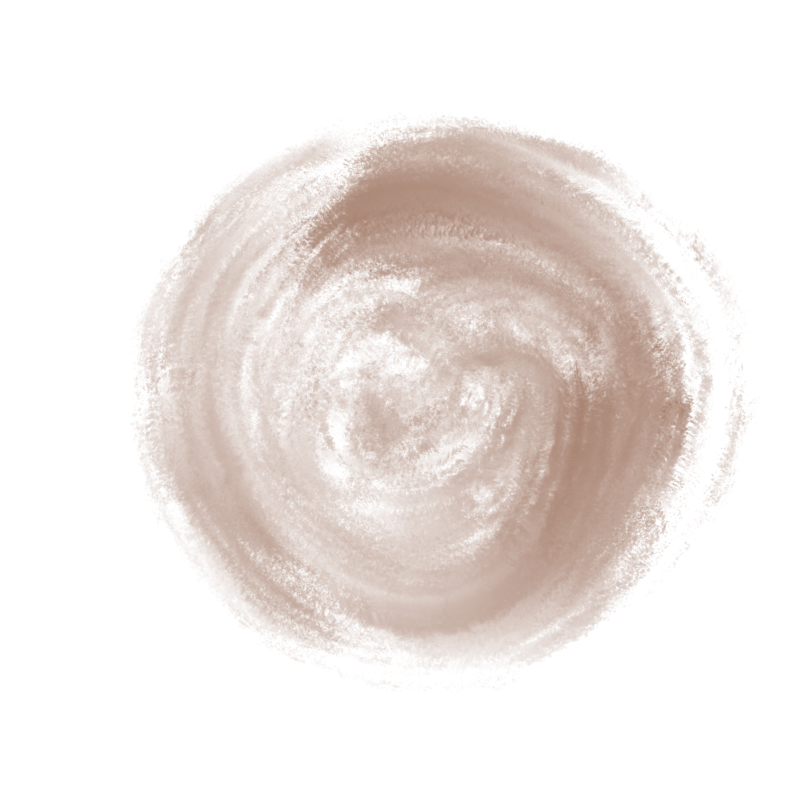
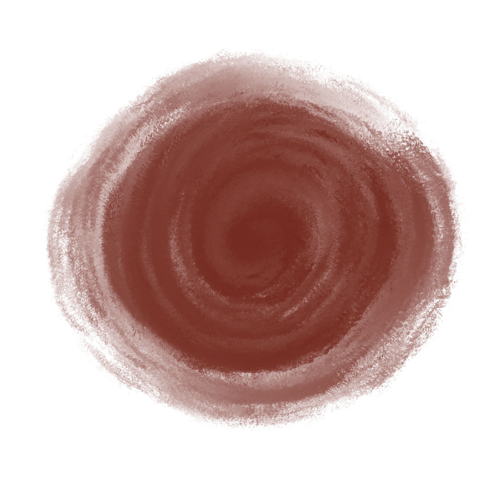
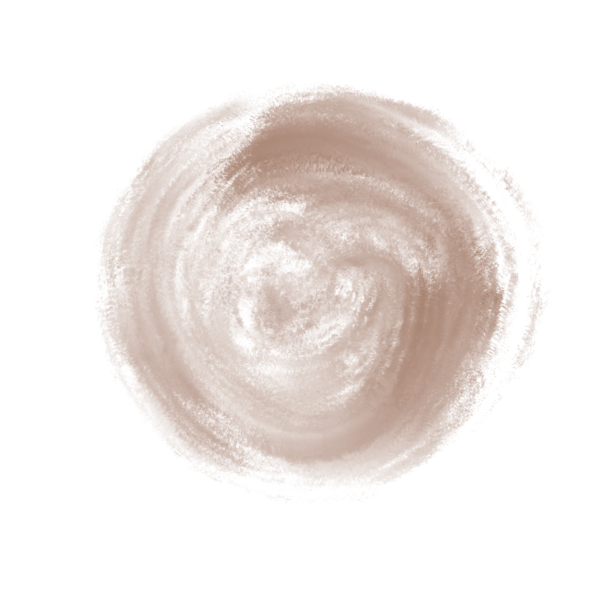

As humans, we shape our lives through the stories we dream. As a storyteller, human-centered designer, and technologist, I craft stories that nourish people, connections, and communities through new media technologies. From films, live performances, and immersive installations, to brand identities, picture books, and narrative soundscapes, each project is created with the pure intent to influence mindful, hopeful, and loving ways of being with ourselves, others, and the planet.


 



 




In this strange new world, much remains unknown. As scientists, we embark on a journey of discovery, striving to understand who we are and what this world represents. We seek to find where we belong within the vastness and depths of the universe.
Each of us walks a unique path, yet there is something we all share. As the collectors and tellers of stories, we interpret and create our own narratives. Our stories come together to weave the collective story of the world. As a storyteller, I help people, communities, and companies craft and share the stories they wish to tell.
We are designers of our own lives, shaping experience with the knowledge and tools we possess. As a designer, I create experiences and products that enhance understanding, connection, and functionality to guide meaningful human experiences.
Humans are makers of tools, evolving alongside what we create. As Marshall McLuhan once said, "We shape our tools and thereafter our tools shape us." I use communicative media technologies to connect people with the stories they seek, reaching communities across the globe through accessible and engaging human-centric innovation.